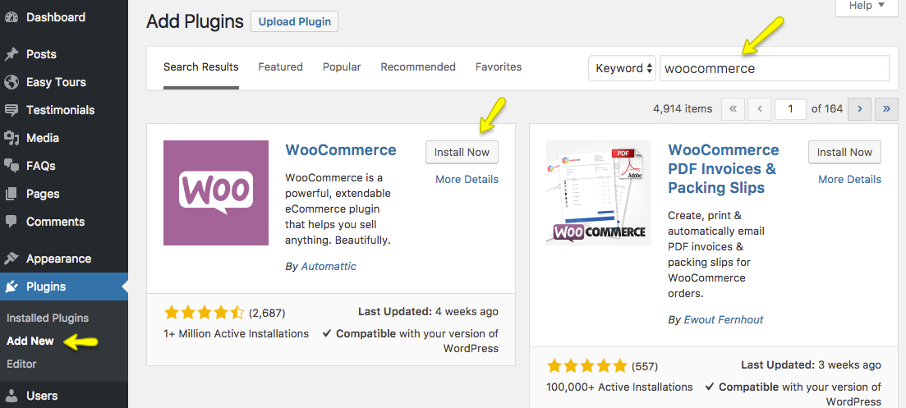
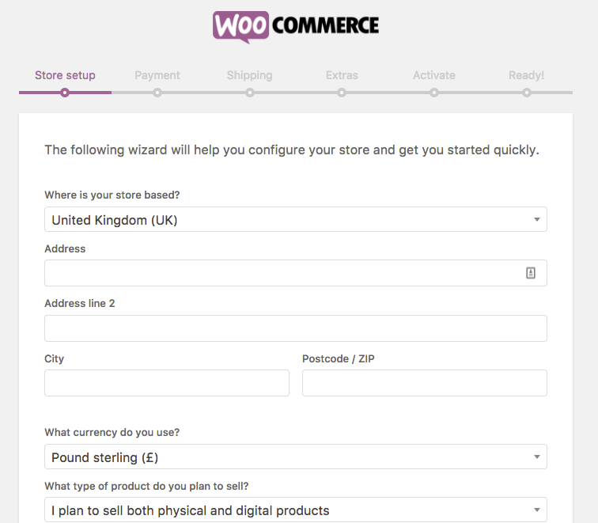
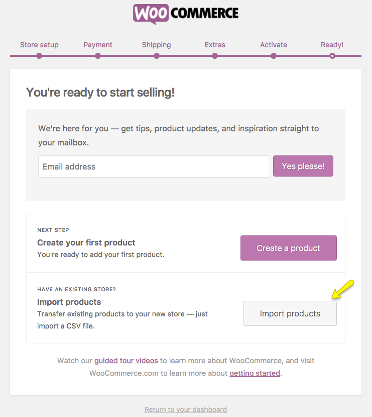
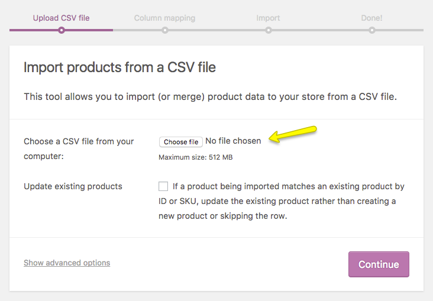
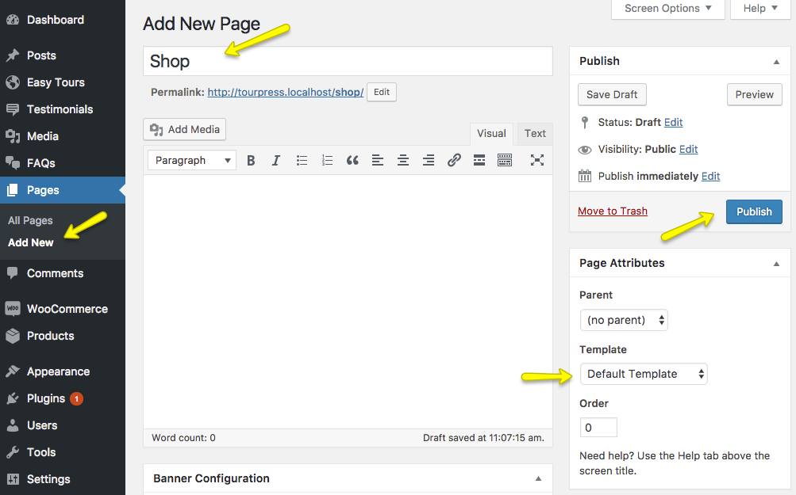
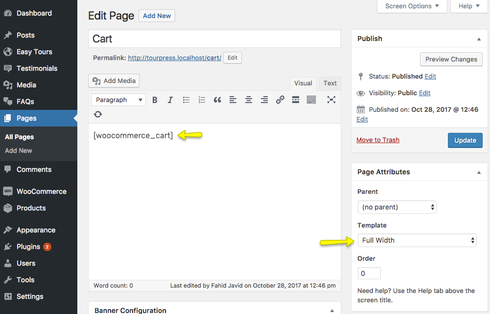
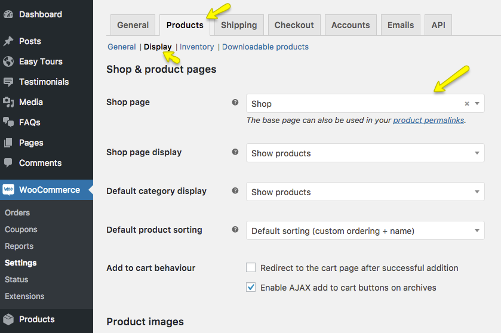
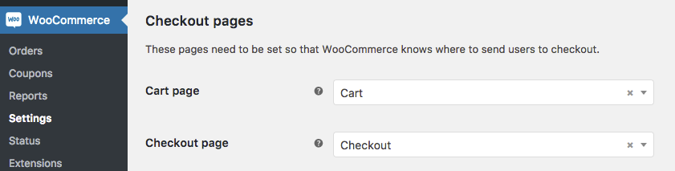
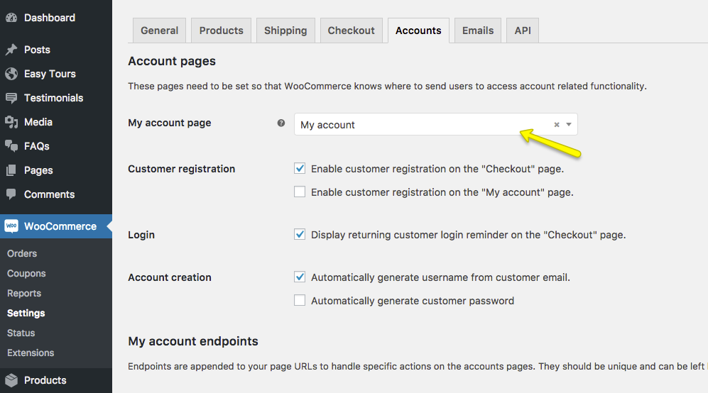

5. WooCommerce Setup
To setup WooCommerce Shop, you need to install WooCommerce plugin on your site.
Installing WooCommerce Plugin¶
Go to the Appearance > Plugins > Add New page and search for the WooCommerce as guided in the following screenshot.

Click on Install Now button and then Activate the plugin.
WooCommerce Store Setup¶
Once you clicked the plugin Activate button it will take you to the WooCommerce Store Setup page, where you can complete your store setup in steps. See this helping screenshot.

Import Products & Shop Pages¶
After WooCommerce Store Setup completion you can import your Products from your older site via CSV file by clicking on the Import products button.

Once you clicked the Import products button, it will redirect you to the products import page.

Create Shop Pages¶
If you have followed above store setup procedure or you have imported the Shop pages with Products already then you do not need to create them again.
Shop Page¶
You can give a title Shop to this page and select Default Template then click the Publish button.

Cart Page¶
You can give a title Cart to this page and select Full Width template. Add [woocommerce_cart] shortcode to the content area then click the Publish button.

Checkout Page¶
You can give a title Checkout to this page and select Full Width template. Add [woocommerce_checkout] shortcode to the content area then click the Publish button.

My Account Page¶
You can give a title My account to this page and select Full Width template. Add [woocommerce_my_account] shortcode to the content area then click the Publish button.

WooCommerce Settings¶
You can update WooCommerce Settings from WooCommerce > Settings page and its tabs.

-
Configure Shop Page
Go to the Products > Display tab and select Shop page for Shop page option as displayed in the following screenshot.

-
Configure Cart & Checkout Pages
Go to the Checkout > Checkout options tab and select Cart and Checkout pages accordingly.

-
My Account Page
Go to the Accounts tab and select My account page for the My account page option.

If above guide is not enough for you to setup your shop. Then you can consult WooCommerce plugin's extensive documentation or detailed video tutorials on the following links.
Getting Started Documentation | Getting Started Video Tutorials